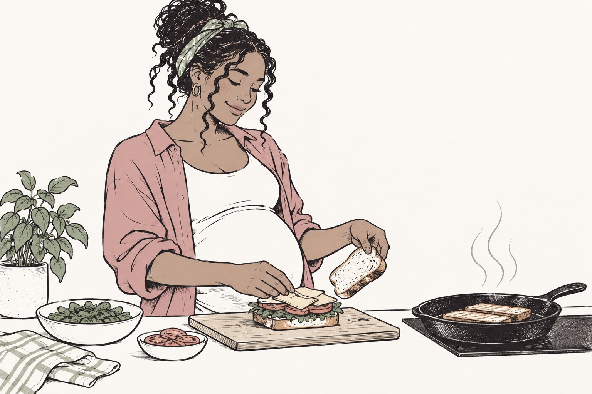

Can You Eat Deli Meat While Pregnant? A Sandwich Guide
A practical guide to deli meat during pregnancy: heating the filling, choosing sandwich alternatives and checking storage.
A sandwich should not require twelve browser tabs. US pregnancy guidance recommends reheating deli meat, cold cuts, hot dogs and similar sausages to 165°F or until steaming hot before eating. A cold turkey sandwich and a sandwich made with properly heated turkey are different choices. See the CDC pregnancy food table.

The fridge is not the final safety step
Refrigeration matters, but it does not replace the heating recommendation for these foods during pregnancy. “Freshly sliced,” “organic” and “uncured” describe different product attributes; none tells you that a cold slice has been reheated.
Read the package to understand what you bought. Deli turkey is not the same preparation as raw turkey breast, and a ready to eat sausage is not the same as a raw sausage. The cooking instructions for the actual product still matter. The FDA ready to eat food guide explains why pregnancy advice includes an extra step for deli meats.
Make the hot sandwich genuinely hot
Heat the meat before assembling the sandwich. If using a microwave, follow appropriate heating instructions, separate or arrange slices so they heat evenly, and check the result. A food thermometer is useful when checking that food has reached the required temperature. A quick toast that browns the bread does not prove the filling was heated through.
Once the meat is heated, build the sandwich with washed produce and ingredients suitable for your needs. Handle the food with clean utensils and eat it promptly. If ordering out, ask for the meat itself to be heated until steaming; “toasted” can mean very different things in different kitchens.
Keep a second lunch option
Sometimes there is no microwave, no trustworthy answer about heating, or simply no appetite for a hot sandwich. Try a freshly prepared chickpea spread, cooked chicken made and stored appropriately, or a pasteurized cheese option that suits current pregnancy guidance. These are alternatives, not reasons to ignore handling.
A sandwich with deli sliced cheese adds another detail to check. Cheese guidance varies by type and preparation, so do not assume the meat is the only ingredient that deserves attention. Our cheese guide explains the label and heating questions.
Dates help, but do not do the heating for you
Use the cold storage chart and the product's instructions to decide how long an opened package belongs in the fridge. Note when you opened it. The printed date does not account for hours spent unrefrigerated in a lunch bag, and reheating is not a rescue plan for badly stored food.
Embryly can help turn “Can I eat this sandwich?” into a clearer ingredient question. Check the actual package and preparation before deciding. If you already ate cold deli meat, that does not establish that you will become ill; ask your care team about a particular exposure, especially if a recall or symptoms are involved.